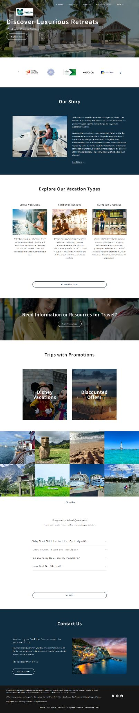

Real project · Travel website
ZenTravels
A travel-focused website arranged to make vacation discovery and the next planning step feel simpler.
Project context
The site needed to present different vacation ideas, offers and travel information without making prospective travelers sort through an unstructured collection of options.
The friction
Travel sites can create plenty of inspiration but still leave visitors unsure how to turn that inspiration into a realistic trip or enquiry.
Key design decisions
- Organize discovery around travel intent instead of a flat list of offers.
- Keep supporting information connected to the trip idea.
- Create a clearer route from inspiration into a practical planning or contact step.
What changed in the journey
Visitors can explore the type of trip that interests them, use the supporting information and move toward a practical next step without losing the thread of the journey.
Apply the thinking
The next project should solve its own customer decision, not copy this design.
This case study is evidence of the process. Your site should use the layout, interaction and feature logic that fits your own customer journey.